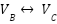
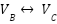

Overview:
In this project we learned how to make a simple rasterizer that would render vector graphics from SVGs files. The fundamental area that we want to approximate is the triangle since it is simple and easily breaks up other polygons. Once we figured out how to draw single color triangles we could get a basic render that looked decent from a distance. However, if we zoomed in and looked closely at the pixels it would have aliasing. To deal with that we did supersampling which would basically average out the color of a point which makes the image smoother and contain less high frequencies. We also wanted to add some dynamics to our renderer which requires applying linear transformations to our coordinates. Finally, we wanted to add textures to our world space. To map the texture space onto the world space we had to sample the textures using pixel sampling and/or level sampling and then interpolate colors across triangles using barycentric coordinates.
Task 1: Drawing Single-Color Triangles
- Walk through how you rasterize triangles in your own words.
- I decided to make a bounding box around the triangle that is going to be rasterized by finding the min and max of the x and y coordinates of each of its vertices. I can now just loop through all the (i, j) pairs within this bounding box (min(x) <= i <= max(x) and min(y) <= j <= max(y) ) and check if each point is within the triangle.
- To check whether each point is within the triangle I simply do the three line test shown in lecture by setting up the equations, where form one of the three sides of the triangle. Then I just plug in the point I’m testing into each of the three equations and see if they’re all greater than 0 or less than 0 to account for possibly choosing the sides in the wrong direction (clockwise/counterclockwise).
- After making sure the point is within the triangle, I fill in the point by calling fill_point(x, y, color), with the color that was passed in.
- Explain how your algorithm is no worse than one that checks each sample within the bounding box of the triangle.
- I create the smallest box I can around the triangle by finding the min and max of the x and y coordinates of each of its vertices so it should be the same as the bounding box of the triangle.
- Show a png screenshot of basic/test4.svg with the default viewing parameters and with the pixel inspector centered on an interesting part of the scene.
Task 2: Antialiasing by Supersampling
- Walk through your supersampling algorithm and data structures. Why is supersampling useful? What modifications did you make to the rasterization pipeline in the process? Explain how you used supersampling to antialias your triangles.
- Supersampling is useful because it can help reduce aliasing in an image by basically blurring the pixels of a higher resolution image to create the one we want. By doing this we can conserve more information from the original structure as we average the pixels together instead of just excluding some pixels to reduce the resolution.
- For my supersampling algorithm, at each point (x, y) I loop over an (n x n) region where n = sqrt(sample_rate) to find all the subpixels. Specifically I find what the radius should be for each pixel, , to calculate the position of each pixel in the region, and for the (k, l) pixel in the (n x n) region. Then I just pass into my three line test discussed in the previous task to see if it's inside the triangle. If the point is within the triangle I fill the pixel with the color passed into the rasterization function.
- To make sure the sample_buffer is the correct size, I changed every line in rasterizer.cpp that resized the sample_buffer to now resize the buffer to have (width * height * sample_rate) elements instead of (width * height) elements. Also, in fill_pixel I changed the indexing of the sample_buffer to be where n = sqrt(sample_rate) from since the width of the sample_buffer is now sqrt(sample_rate) times as big.
- In the resolve_to_framebuffer() function I used the values in my sample_buffer to antialias my image by averaging the colors of all the pixels in the region of the corresponding larger pixel.
- Show png screenshots of basic/test4.svg with the default viewing parameters and sample rates 1, 4, and 16 to compare them side-by-side. Position the pixel inspector over an area that showcases the effect dramatically; for example, a very skinny triangle corner. Explain why these results are observed.
- [a][b][c]
- As we increase the sample rate, there are more pixels with different colors because we need to average more values together to determine their colors. This creates a smoothing effect at the edges and corners which is why increasing the sample rate makes shapes look better in the final image.
Task 3: Transforms
- Create an updated version of svg/transforms/robot.svg with cubeman doing something more interesting, like waving or running. Feel free to change his colors or proportions to suit your creativity. Save your svg file as my_robot.svg in your docs/ directory and show a png screenshot of your rendered drawing in your write-up. Explain what you were trying to do with cubeman in words.
- I tried to get my cubeman to wave with their right hand
Task 4: Barycentric coordinates
- Explain barycentric coordinates in your own words and use an image to aid you in your explanation. One idea is to use a svg file that plots a single triangle with one red, one green, and one blue vertex, which should produce a smoothly blended color triangle.
- Barycentric coordinates are coordinates to describe points relative to the vertices of a triangle.
For example, in the above photo the point V can be described by three values, , where and are the vertices of the triangle. Specifically, if we were to set  to 0 and
to 0 and  to 1, V would be located on vertex C, , since it has all the value. Normally the three values , are non negative if we want the pixel to be within the triangle and it needs to satisfy the equation . These coordinates can be used to linearly interpolate different values for a point within a triangle such as its location, color, and/or texture. In the image above, we can find the correct value for V based off the color of each vertex by linear interpolation using the three values and the color of each vertex, . To find the values of we must use the values of the three line test for the point V and also plugging in each vertex that is not on the line, plugging in the coordinates of into the line test equation for the line . Then we can use these calculated values to find .
to 1, V would be located on vertex C, , since it has all the value. Normally the three values , are non negative if we want the pixel to be within the triangle and it needs to satisfy the equation . These coordinates can be used to linearly interpolate different values for a point within a triangle such as its location, color, and/or texture. In the image above, we can find the correct value for V based off the color of each vertex by linear interpolation using the three values and the color of each vertex, . To find the values of we must use the values of the three line test for the point V and also plugging in each vertex that is not on the line, plugging in the coordinates of into the line test equation for the line . Then we can use these calculated values to find .
- Show a png screenshot of svg/basic/test7.svg with default viewing parameters and sample rate 1. If you make any additional images with color gradients, include them.
Task 5: "Pixel sampling" for texture mapping
- Explain pixel sampling in your own words and describe how you implemented it to perform texture mapping. Briefly discuss the two different pixel sampling methods, nearest and bilinear.
- Pixel sampling is how we determine the texture we assign a point with a given (u, v) coordinate in texture space. When we map a point from image space to texture space, we may get coordinates that fall between two integers so we need to implement a way to decide what the texture should be based on the values around it.
- One of the ways for pixel sampling is nearest sampling where we just round the (u, v) coordinates we have to their closest integers and use the texture from that point. Another method is bilinear sampling where we take the closest four points in texture space to (u, v) and create a linear combination of their texture values based on how far each point is from the original (u, v) coordinates.
In the image above, the texture of our point (x, y) will be the texture of one of the corners scaled by the area of the square touching the opposite corner (i.e. the texture of the yellow point * the area of the yellow region). Basically, if our point (x, y) is closer to a given corner, the associated region of that corner will have a larger area, thus contributing more to the texture value of (x, y). - To implement pixel sampling I first found the coordinates of a pixel in texture space from its location in image space using the barycentric coordinates of the point, . To find u and v I just calculate the linear combination of the texture coordinates of the vertices of the triangle, ), with the barycentric coordinates of the point, . Now I would just pass the (u, v) I calculated and perform one of the two methods I described above using the round, floor, and ceil functions to get the nearest coordinate(s) so I can use their texture values to find the correct value for my current point..
- Check out the svg files in the svg/texmap/ directory. Use the pixel inspector to find a good example of where bilinear sampling clearly defeats nearest sampling. Show and compare four png screenshots using nearest sampling at 1 sample per pixel, nearest sampling at 16 samples per pixel, bilinear sampling at 1 sample per pixel, and bilinear sampling at 16 samples per pixel.
Bilinear Sampling, 1 sample/pixel
[d]
Bilinear Sampling, 16 samples/pixel
[e]
Nearest Sampling, 1 sample/pixel
[f]
Nearest Sampling, 16 samples/pixel
[g]
- Comment on the relative differences. Discuss when there will be a large difference between the two methods and why.
- In the 1 sample per pixel case, bilinear sampling looks better than nearest as it’s blending the values of nearby pixels so the drop off seems very fluid. On the other hand, nearest sampling is only using the value of the nearest pixel so the pixels are either really white or really blue and there isn’t an in-between color causing there to be a distinct drop off in the white line.
Task 6: "Level sampling" with mipmaps for texture mapping
- Explain level sampling in your own words and describe how you implemented it for texture mapping.
- Level sampling involves creating a pyramid of downsized images that can be used to use pixels at different resolutions when doing pixel sampling. When we have an image whose content is supposed to get farther and farther such as a picture of a room where the back wall appears small, aliasing may occur to lines on these far away walls but not necessarily to content that is up close in the image. This happens because this far away content is usually very small. At very short pixel distances we may have a big jump in texture space so it may look better if we used pixels from a lower resolution version of the image which have more of a blurred texture.
- To implement level sampling I found
 and using the
and using the
(u, v) coordinates of current point (x, y) and two that are 1 unit away,
(x+1, y) and (x, y+1). Specifically, I found the differences between the (u, v) coordinates of my original point (x, y) with the coordinates of (x+1, y) and (x, y+1). With theses derivatives, I found the best level to sample from for the given point using the equation that was given to us in lecture,
where D is the level. I would then just feed this level into my pixel sampling methods so they know from which level to sample texture values. For nearest level sampling, I simply just rounded the value D I got from the above equation and for the linear sample method I computed a weighted linear combination of the results from using the floor and ceiling of the current D value as the level. The weights would just be (D - floor(D)) and (ceil(D) - D).
- You can now adjust your sampling technique by selecting pixel sampling, level sampling, or the number of samples per pixel. Describe the tradeoffs between speed, memory usage, and antialiasing power between the three various techniques.
- Pixel sampling is the fastest of the three techniques as it only requires looking at 4 nearby pixels while level sampling requires an image pyramid to be made and supersampling requires sample_rate times more iterations when filling out the sample buffer.
- Pixel sampling requires the least amount of memory usage as we only need to look at 4 nearby pixels while supersampling requires sample_rate times more memory to hold our high resolution version of the image. Also level sampling requires more memory usage than pixel sampling as we need to store the image at different resolutions so we can access pixels at different levels.
- Level sampling probably has the most antialiasing power as not all parts of an image will look good if we use pixel values just from one fixed resolution as supersampling and pixel sampling do. With level sampling, different pixels can use pixels from the image at different resolutions to account for possibly big jumps surrounding their texture space coordinates.
- Using a png file you find yourself, show us four versions of the image, using the combinations of L_ZERO and P_NEAREST, L_ZERO and P_LINEAR, L_NEAREST and P_NEAREST, as well as L_NEAREST and P_LINEAR.
L_ZERO and P_NEAREST
L_ZERO and P_LINEAR
L_NEAREST and P_NEAREST
L_NEAREST and P_LINEAR
[d]bilinear, 1 sample per pixel
[e]bilinear, 16 samples per pixel
[f]nearest, 1 sample per pixel
[g]nearest, 16 samples per pixel